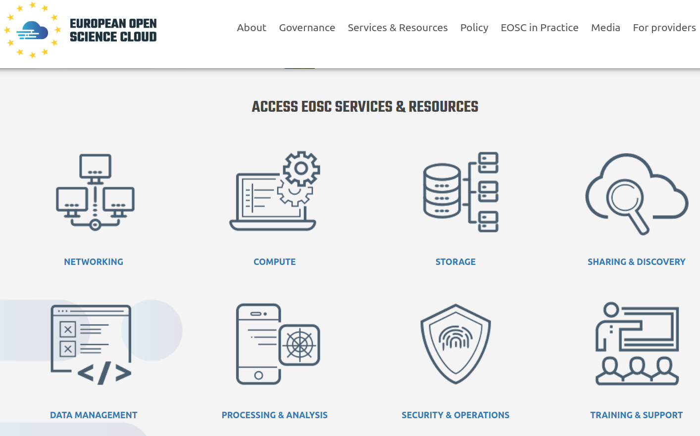
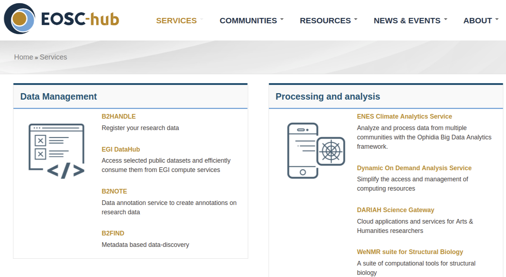
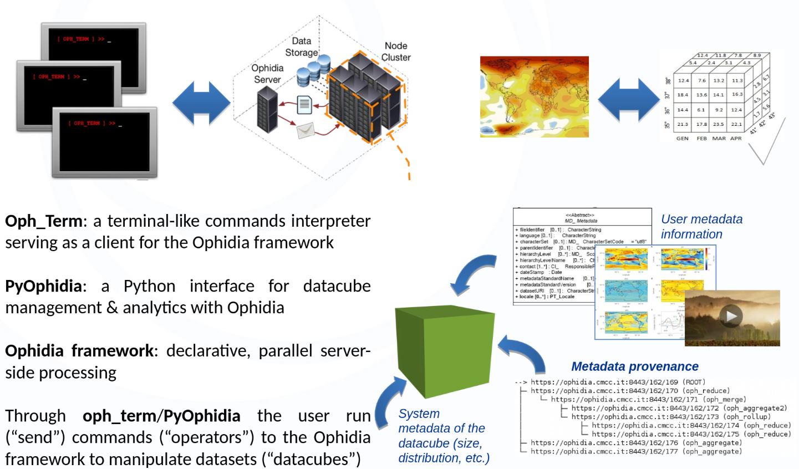
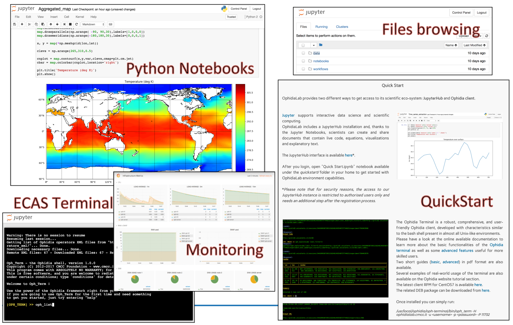
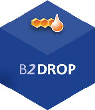
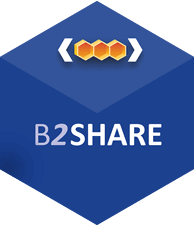

Data Analysis and Sharing with the ENES Climate Analytics Service

Sofiane Bendoukha
German Climate Computing Center (DKRZ)
eScience 2019 15th International Conference
24-27 September, San Diego, USA
EOSC-hub receives funding from the European Union’s Horizon 2020 research and innovation programme under grant agreement No. 777536
Agenda
- ECAS (presentation)
- Demo
- Hands on
- Exercise
- Break
- Data sharing with ECAS
- WPS (optional)
- Wrap up
Tutorial Materials
Useful Links
-
ECASLab Web site
https://ecaslab.dkrz.de -
Jupyterhub
https://ecaslab.dkrz.de/jupyter/ -
Ophidia user documentation
http://ophidia.cmcc.it/documentation/users/index.html
ENES Climate Analytics Service

The European Open Science Cloud

EOSC-hub project

- EC H2020 Project
- Under the coordination of EUDAT, EGI and INDIGO-DataCloud
- The catalogue includes services in four broad areas: Common, Thematic, Collaborative and Federation.
- Training activities
EOSC-hub receives funding from the European Union’s Horizon 2020 research and innovation programme under grant agreement No. 777536
Overview
-
ECAS is part of WP 7: thematic services
- ECAS enables scientific end-users to perform data analysis experiments
- Server-based
- Computation @ DKRZ or CMCC
- Avoid data transfer (download)
- Improved reusability of data and workflows (FAIR approach)
-
ECAS supports different Auth* providers
- Local and external providers supported (LDAP, B2ACCESS, EGI Check In)
- Additional AAI providers can be integrated on demand (e.g. GITHUB)
Service Architecture and Interfaces

Data overview
- ECAS provides data access via ESGF
- Coordinated Regional Climate Downscaling Experiment
- ~ 100 Tbyte Cordex
- Coupled Model Intercomparison Project 5
- ~ 1.2 Pbyte CMIP 5 data
- Coupled Model Intercomparison Project 6
- ~ 250 Tbyte CMIP6 data from the 1PByte published
- Other data pools can be mounted on demand
- MPI Grand Ensemble (MPI-GE)
- Data collection exposed in the Federated Data Archive (e.g. OneData)
Ophidia framework overview
- The Ophidia framework addresses big data chellenges for eScience
- support for declarative, parralel, server-side data analysis exploiting parralel computing techniques
- end-to-end mechanisms tu support complex experiments and large processing workflows on scientific multi-dimensional cubes
- Ophidia supports both batch and interactive data analytics
- More than 50 datacube-oriented operators are available, including: data reduction and subsetting, data intercomparison, metadata and provenance management,
time series analysis with array-based primitives - A wide set of (low-level) array-based primitives (over 100) to perform, e.g. data summerization, algebraic expressions, predicates evaluation, statistical analysis
- Support for complex workflows ad Python applications execution
- More than 50 datacube-oriented operators are available, including: data reduction and subsetting, data intercomparison, metadata and provenance management,

Server-side paradigm and datacube abstraction in Ophidia

ECASLab

Data sharing with ECAS
- Share your results with your team or with researchers from a broader community
- Post-processing datasets
- Jupyter notebooks
- Cloud-based storage and sharing services integrated within ECAS
-
B2DROP online storage for external/internal collaborators.
Keep data synchronized and up-to-date - B2SHARE store and publish research data from diverse contexts. Data assigned a Persistent Identifiers for better findability
- DataHub (OneData) a global data access solution for eScience
-
B2DROP online storage for external/internal collaborators.
 
Demo
Register/Log in and explore the Jupyter environment
Notebooks
Terminal
Hands on
- Open the following notebook:
/notebooks/ECASLab-Training.ipynb - It provides step-by-step instructions on how to use the Ophidia operators as well as the PyOphidia library.
- After the completion you can try to run the other notebooks available under the /notebooks folder or proceed with the following exercise.
Exercise
- Calculate the number of Summer days
- Starting from the daily maximum temperature, the Summer Days index is the annual count of days number of days where TX (daily maximum temperature) > 25°C
- Based on the definition, try to calculate the number of Summer Days (you can start from the Tropical_Nights.ipynb notebook).
- Useful information:
-
Input NetCDF:
-
E63_kp40_198001_199012_T2m_daymax_merged.nc
-
tasmax_day_CMCC-CESM_rcp85_r1i1p1_20960101-21001231.nc
-
-
25°C: 298.15 Kelvin
-
Stay in touch!
- Support
ecas-support@dkrz.de